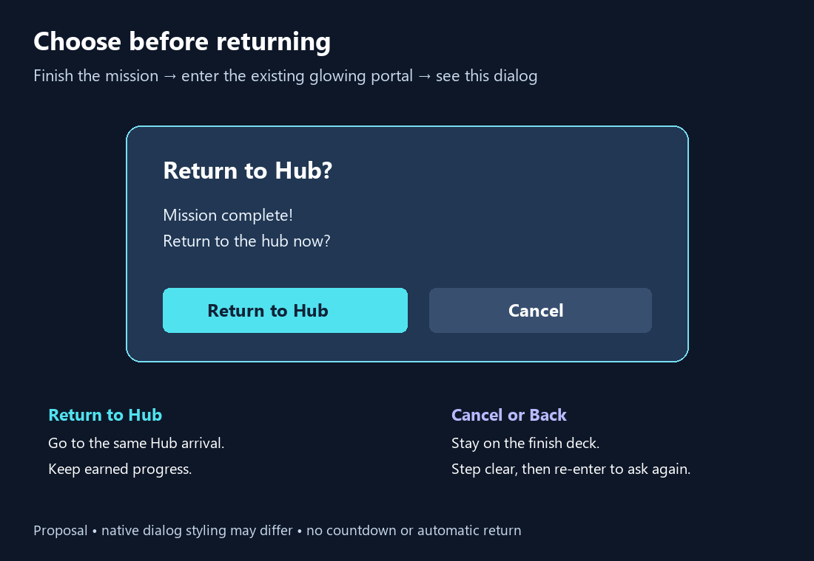

The existing portal stays in place. After completing the mission, entering it opens this dialog. Only choosing Return to Hub teleports you; Cancel or Back keeps you at the finish.
The dialog won't repeat while you stand inside. Step clear and re-enter to ask again. Existing Return buttons and Replay remain available. Earned progress is kept.
One supporting native dialog device; no layout or portal changes. Implementation awaits explicit approval. Behavior will be checked manually by the owner.
Concrete plan · Review findings · Unchanged course and portal overview